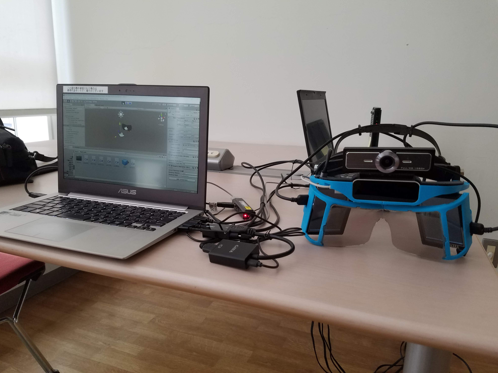
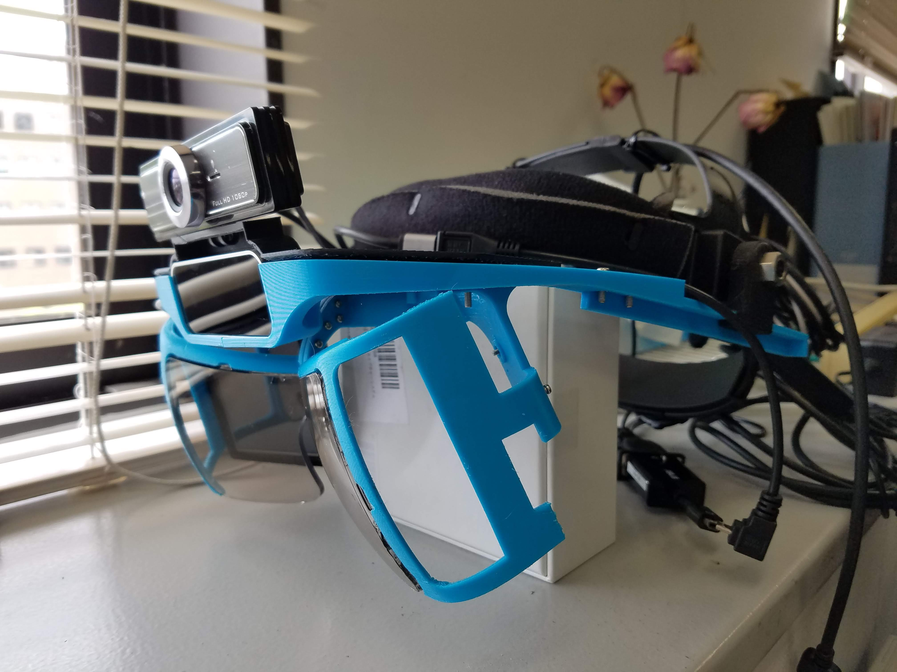
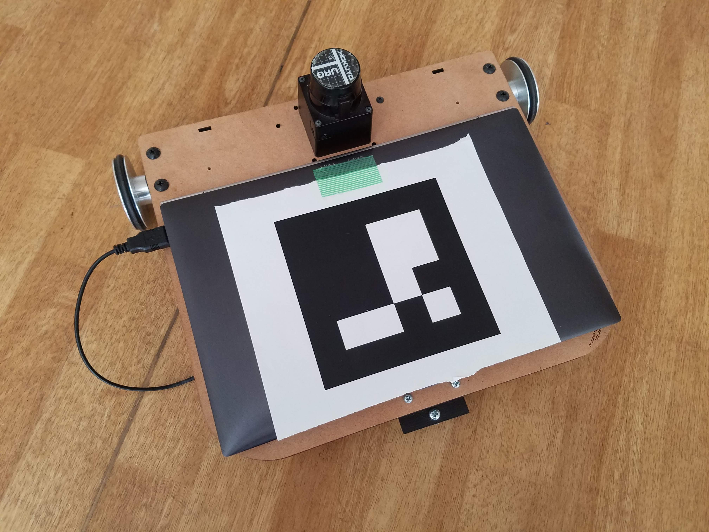

Oculus Goが出たころに、MicrosoftからHoloLensが発売されて体験する機会がありました。
この時、これが将来のスマホに代替する装置になるのではと思いましたが、40万を超える金額を学生の自分に出せなかったので、3Dプリンタで作れるNorthStarを自作してロボットの操作インターフェイスの開発を行いました。
NorthStarを作成する

NorthStarとは3Dプリンタで作れるARゴーグルで、表示用にノートPCが必要、手の操作認識にLeapmotionが必要であるなど様々な付属品が必要ですが、3万円程度で作れるARゴーグルです。
3Dプリンタで一からARゴーグルのNorthStarを作成していました。
助教の先生に精度のいい3Dプリンタを貸してもらったり、海外からレンズを取り寄せたり、いろんな手段を使って完成させました。
この時のNorthStarの作成手順はブログにまとめています。
North Star製作日記 2.NorthStarの製作・組み立て
North Star製作日記 3.NorthStarが動く環境づくり
ハードウェアの干渉でNorthStarのキャリブレーションが上手くいかない
画像処理でARゴーグルとロボットの位置を検出する

HoloLensは周囲の環境を取得して頭の位置が空間内のどの位置にあるかを計算できますが、NorthStarにはそのような機能はありません。
ロボットを操作する際に頭からのロボットの位置が分かっていないと、ARで操作インターフェイスを作ってもどこに表示すればいいかわかりません。
そこで、ロボットにマーカをつけて、マーカをNorthStarにつけたカメラで読み取り、ロボットとNorthStarの相対位置を取得させました。
OpenCVを使ってマーカの相対位置を検出して計算させています。
この時の画像処理の解説はブログにまとめています。
ArucoUnityでCharuco boardを作ってカメラのキャリブレーションデータを取得する
estimatePoseSingleMarkersのtvecとrvecからカメラ姿勢を計算する
estimatePoseSingleMarkersのtvecとrvecからマーカ位置を計算する
ARゴーグルでロボットを指で操作する
NorthStarを作成して、カメラでロボットとNorthStarの相対位置をとることでロボットの操作インターフェイスとして最低限必要な機能がそろいました。
ロボットの操作方法として、指を指した方向にロボットが進み、ARゴーグルで進行方向が分かれば操作しやすいのではと思い、作成しました。
ただ、操作するには背中にノートPCを背負い、たくさんのケーブルをARゴーグルにつなげる必要があり、開発のしにくさからここで開発をストップしました。